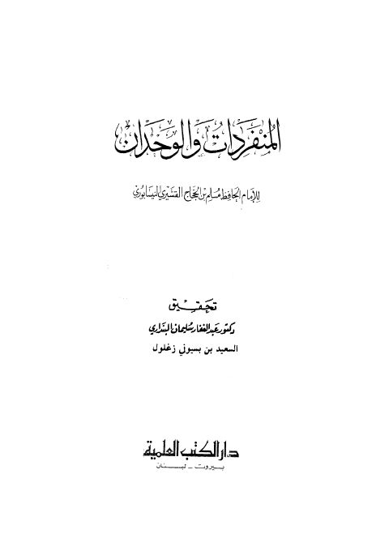
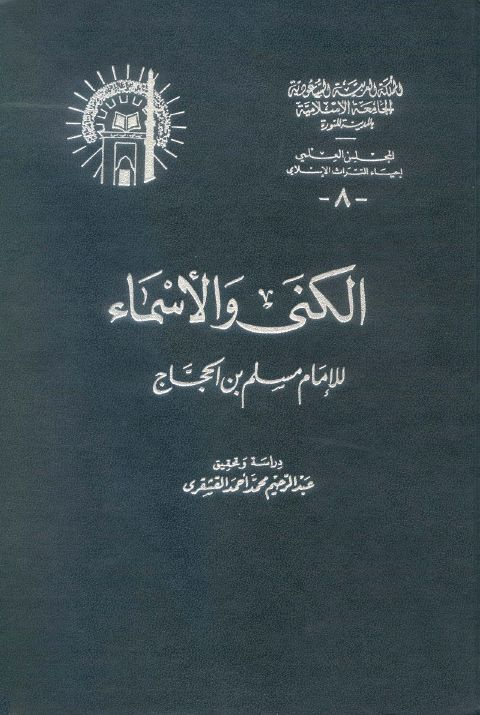
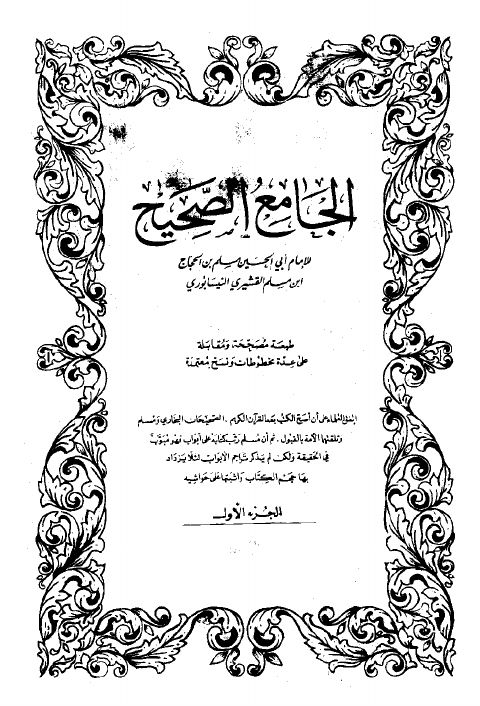
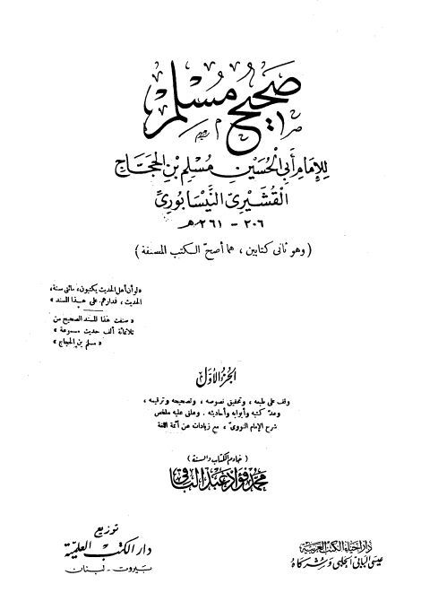
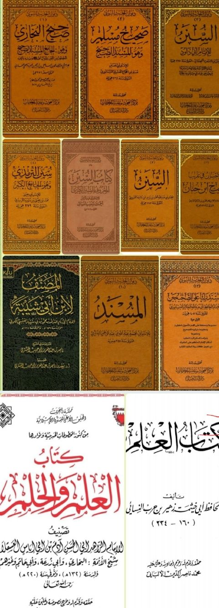

مسلم بن الحجاج بن مسلم القشيري النيسابوري
Author
About the author
الإمَام مُسْلِم (٢٠٤ - ٢٦١ هـ = ٨٢٠ - ٨٧٥ م)
مسلم بن الحجاج بن مسلم القشيري النيسابورىّ، أبو الحسين
• حافظ، من أئمة المحدثين.
• ولد بنيسابور، ورحل إلى الحجاز ومصر والشام والعراق، وتوفي بظاهر نيسابور.
• أشهر كتبه (صحيح مسلم - ط) جمع فيه اثني عشر ألف حديث، كتبها في خمسة عشر سنة، وهو أحد الصحيحين المعول عليهما عند أهل السنة، في الحديث، وقد شرحه كثيرون.
• ومن كتبه (المسند الكبير) رتبه على الرجال
• و (الجامع) مرتب على الأبواب
• و (الكنى والأسماء - خ) في الظاهرية بدمشق (مجاميع ٦) في نحو ٣٥ ورقة، كتبت سنة ٤٧١ (ذكرها الميمني) وفي الظاهرية أيضا (٢٠٢) وصف جزء من الكنى والأسماء في ١٢٠ ورقة، في المجموع ١١ (٤١) [طُبع]
• وله (الأفراد والوحدان - ط)
• و (الأقران)
• و (مشايخ الثوري)
• و (تسمية شيوخ مالك وسفيان وشعبة)
• و (كتاب المخضرمين)
• و (كتاب أولاد الصحابة)
• و (أوهام المحدثين)
• و (الطبقات)
• و (أفراد الشاميين)
• و (التمييز)
• و (العلل) (١).
_________
(١) تذكرة الحفاظ ٢: ١٥٠ وتهذيب ١٠: ١٢٦ وابن خلكان ٢: ٩١ وفهرسة ابن خير ٢١٢ وتاريخ بغداد ١٣: ١٠٠ وفيه أن مسلما حذا حذو البخاري في صحيحه، ولما ورد البخاري نيسابور في آخر أمره لازمه مسلم. و ١٣ - ٤١٢ Princeton وطبقات الحنابلة ١: ٣٣٧ والبداية والنهاية ١١: ٣٣ ومعجم المطبوعات ١٧٤٥ وهادي المسترشدين إلى اتصال المسندين ٣٢٧ و Brock ١: ١٦٦ (١٦٠) S ١: ٢٦٥. وانظر فهرس المؤلفين ٢٩٩.
نقلا عن: «الأعلام» للزركلي [مع إضافة بين معقوفين]
- التمييز لمسلم
- الكنى والأسماء - للإمام مسلم
- المنفردات والوحدان
- صحيح مسلم - ت عبد الباقي
- صحيح مسلم - ط التركية
Books
|
Book
|
Pages
|
|---|---|
| صحيح مسلم - ت عبد الباقي | 7,495 |
Resources

المنفردات والوحدان المنفردات والوحدان مسلم بن الحجاج القشيري النيسابوري
الكنى والأسماء- ت القشقري الكنى والأسماء- ت القشقري مسلم بن الحجاج
الجامع الصحيح طبعة مصححة الجامع الصحيح طبعة مصححة مسلم بن الحجاج بن مسلم القشيري النيسابوري
صحيح مسلم -ت. محمد فؤاد عبد الباقي- طبعة الحلبي صحيح مسلم -ت. محمد فؤاد عبد الباقي- طبعة الحلبي مسلم بن الحجاج بن مسلم القشيري النيسابوري صحيح مسلم مع شرحه المنهاج للنووي- ط كراتشي ملونة
صحيح مسلم مع شرحه المنهاج للنووي- ط كراتشي ملونة
مسلم بن الحجاج القشيري النيسابوري • النووي • السندي • شبير
صحيح مسلم مع شرحه المنهاج للنووي- ط كراتشي ملونة
صحيح مسلم مع شرحه المنهاج للنووي- ط كراتشي ملونة
مسلم بن الحجاج القشيري النيسابوري • النووي • السندي • شبير

كتاب العلم من كتب الستة وابن حيان والدارمي وابن شيبة والمستدرك كتاب العلم من كتب الستة وابن حيان والدارمي وابن شيبة والمستدرك أبو داوود • النيسابوري • البخاري • النسائي • ابن حبان • ابن ماجه • الترمذي